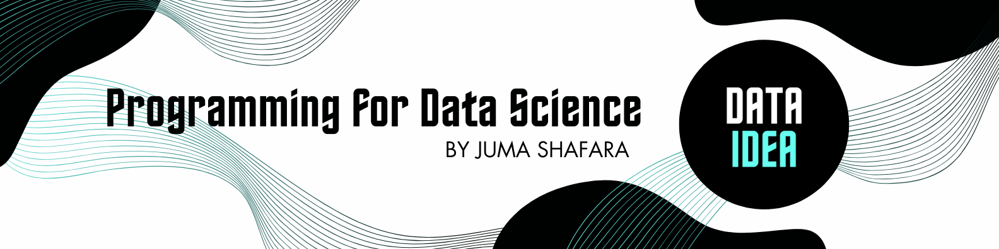

class Person:
first_name = "Betty"
last_name = "Kawala"
age = 30
Advanced
In this notebook, we’ll introduce and discuss the following concepts in Python
- Classes and Objects
- Formatted Strings
- Handling Errors
- Variable Scopes
Classes and Objects
In Python, everything is an object. A class helps us create objects.
Creating a Class
Use the class keyword to create a class
Instantiating a class
Now we can ceate an object from the class by instantiating it.
To instantiate a class, add round brackets to the class name.
person_obj1 = Person()
type(person_obj1)__main__.PersonAfter instantiating a class, we can now access the object’s properties.
# print attributes
print(person_obj1.first_name)
print(person_obj1.last_name)
print(person_obj1.age)Betty
Kawala
30Class Attributes
A class can have attributes. Forexample the Person Class can have attributes like the name, height and feet
class Person:
def __init__(self, name, height, feet):
self.name = name
self.height = height
self.feet = feetNote!
For now, focus on the syntax. Later we will explain the init() function and the self parameter.
Now that our class is ready, we can now instantiate it and provide values to it’s attributes.
This process can also be called “creating an instance of a class”.
An instance is simply the object created from a class
In this example, person_obj1 is a unique instance of the person class.
# create a class instance
person_obj1 = Person(
name='Betty Kawala',
height=1.57,
feet=4
)
# accessing the properties
print('Name:', person_obj1.name)
print('Height:', person_obj1.height)
print('Feet:', person_obj1.feet)Name: Betty Kawala
Height: 1.57
Feet: 4The self parameter allows us to access the attributes and methods of a class
The __init__() functino allows us to provide values for the attributes of a class
Instances are unique
Let’s say you have 500 people and you need to manage their data.
It is inefficient to create a variable for each of them, instead, you can create unique instances of a class.
In this example, the student1 and student2 instances are different from each other
class Student:
def __init__(self, id_number, name, age):
self.id_number = id_number
self.name = name
self.age = age
student1 = Student(5243, "Mary Doe", 18)
student2 = Student(3221, "John Doe", 18)
print("Student 1 ID:", student1.id_number)
print("Student 1 Name:", student1.name)
print("Student 1 Age:", student1.age)
print("---------------------")
print("Student 2 ID:", student2.id_number)
print("Student 2 Name:", student2.name)
print("Student 2 Age:", student2.age)Student 1 ID: 5243
Student 1 Name: Mary Doe
Student 1 Age: 18
---------------------
Student 2 ID: 3221
Student 2 Name: John Doe
Student 2 Age: 18Methods
Methods are functions that can access the class attributes. These methods should be defined (created) inside the class
class Person:
def __init__(self, name, height, feet):
self.name = name
self.height = height
self.feet = feet
def jump(self):
return "I'm jumping " + str(self.feet) + " Feet"person_obj1 = Person(name='Juma', height=1.59, feet=5)
print(person_obj1.jump())I'm jumping 5 FeetAs you may notice, we used the self parameter to access the feet attribute
Python Inheritance
Inheritance is a feature that allows us to create a class that inherits the attributes or properties and methods of another class
Example
The Animal class below can be used to tell that an animal can eat
class Animal:
def __init__(self, name, age):
self.name = name
self.age = age
def eat(self):
print(f"{self.name} is eating.")Let’s say we need to create another class called Dog.
Since a dog is also an animal, it’s more efficient to have access to all the properties and methods of the Animal class than to create another
This example creates a class named Dog and inherits from the Animal class
class Dog(Animal):
def __init__(self, name, age, color):
super().__init__(name, age)
self.color = color
def sound(self):
print(self.name, "barks")Note!
As you may notice, to inherit from a parent, we simply pass the name of that class as a parameter of the child class.
Now we can use the properties and methods of both the Animal and the Dog classes using just one instance
dog1 = Dog(name='Brian', age=8, color='White')
dog1.eat()
dog1.sound()Brian is eating.
Brian barksThe super() and __init__ functions found in the Dog class allow us to inherit the properties and methods of the Animal class.
Parent and Child Class
The parent class is the class from whick the other class inherits from.
The child class is the the class that inherits from another class
In our example above, the Animal is the parent class while the Dog class is the child class
Formatted Strings
In Python, we can format a string by adding substring/s within it.
The format() function allows us to format strings.
Placeholders {}
Placeholders help us control which part of the string should be formated.
They are defined using curly braces {}.
Multiple placeholders
If you want to format multiple parts of a string, use multiple placeholders.
In this example, we will concatenate (add) a substring to where the curly braces are placed
statement = '{} loves to code in {}'
formatted = statement.format('Juma', 'JavaScript')
print(formatted)Juma loves to code in JavaScriptLiteral String Interpolation
Literal string interpolation allows you to use expression inside your strings.
Simply add f before you opening quote, then surround your expressions with curly braces {}.
name = 'Juma';
language = 'JavaScript'
statement = f'{name} loves to code in {language}'
print(statement)Juma loves to code in JavaScriptHere’s another example
answer = f'The summation of 5 and 7 is {5 + 7}'
print(answer)The summation of 5 and 7 is 12Using indexes
We can use index numbers to specify exactly where the values should be placed.
The index numbers should be inside the curly braces: {index_number}
statement = '{0} loves to code in {1}'
modified = statement.format('Juma', 'JavaScript')
print(modified)Juma loves to code in JavaScriptNote!
0 represents the first value, 1 represents the second value and so on.
Using named indexes
We can also use named indexes to specify exactly where the values should be placed
The arguments of the format() functino should be in key/value pairs ie key=value
The key/value pairs should be separated by commas.
statement = '{name} loves to code in {language}'
modified = statement.format(language='JavaScript', name='Juma')
print(modified)Juma loves to code in JavaScriptErrors in Python
When coding in Python, you will encounter errors.
When errors occur, the program crashes or stops executing.
Fortunately, errors can be handled in Python
The try...except statment
The try...except statement is used to handle exceptions(errors)
The try statement takes a block of code to test for errors
The except statement handles the exceptions.
try:
# age = input('Enter your age: ')
age = '32'
if age >= 18:
print('Your vote has been cast')
else:
print('You are not eligible to vote')
except:
print('A problem occured while picking your age \n'
'You did not enter a number')A problem occured while picking your age
You did not enter a numberThrow Exceptions
We can intentionally throw and exception to stop the execution of a program.
The raise keyword throws an excrption.
# Creating your own errors
try:
# age = int(input('Enter your age: '))
age = ''
if age < 18:
raise Exception('Not an adult')
except Exception as error:
print('A problem occurred \n'
f'Error: {error}')A problem occurred
Error: '<' not supported between instances of 'str' and 'int'Kinds of Exceptions
In Python, there are different kinds of exceptions and we can handle them individually with the try...except statement.
try:
# statements
except ExceptionKind:
#statmentsOne of the most common kind of exceptions is the NameError. This is thrown when you use a variable that is not defined
try:
print(rand_var)
except NameError:
print('You used a variable that is not defined!')You used a variable that is not defined!Variable Scope
Python Variable Scopes
The accessibility of variable depends on its scope. In Python, there are two variable scopes:
- Global Scope
- Local Scope
Global Scope
A variable that is defined (created) outside a function has a global scope
A global variable can be accessed anywhere in a program
name = 'Viola'
# name can be accessed here
print(name)
def greet():
# name can be accessed here
print('Hello ' + name)
greet()Viola
Hello ViolaLocal Scope
A variable that is defined (created) inside a function has a local scope. A local scope variable can only be accessed and used inside the function.
def greet():
local_name = 'Viola'
print('Hello ' + local_name)
greet()
try:
# local_name cannot be accessed here
print(local_name)
except Exception as e:
print(e)Hello Viola
name 'local_name' is not definedThe global Keyword
We can force a local variable to be a global variable by using the global keyword.
# Global Keyword
def add():
global summ
number1 = 5
number2 = 7
summ = number1 + number2
return summ
add()
# summ is accessible even outside the function
print(summ)12Don’t miss out on any updates and developments! Subscribe to the DATAIDEA Newsletter it’s easy and safe.